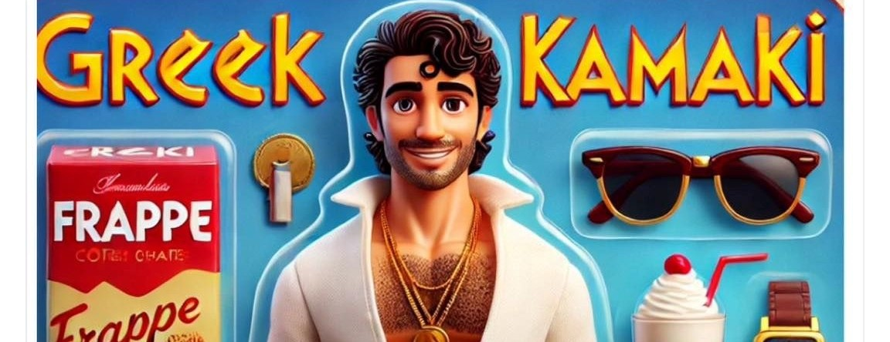

Kamakis
Wie ’s avonds door de straten van Kos-stad of langs drukke boulevards loopt, zal ze ongetwijfeld tegenkomen: de zogenaamde proppers, of zoals ze op Kos genoemd worden, kamakis.
Bij vrijwel ieder restaurant staan ze wel. Dit zijn vaak spontane, vrolijke mannen of vrouwen – soms obers met een vlotte babbel – die toeristen aanspreken om hen naar binnen te lokken of informatie te geven over het restaurant of een excursie.